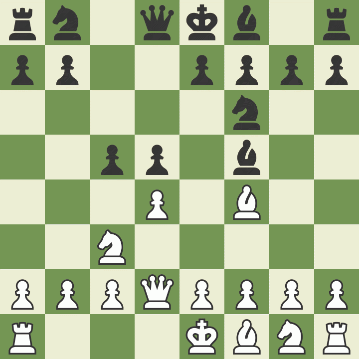

Both players start with one King each, located in the center of the board next to the Queen. White's King starts on e1 while Black's King starts on e8, directly across from each other.
The mnemonic used for the placement of the Queen can also be used for the King but it is reversed. "The King starts on the opposite color of it's own." This means that a White King starts on a black square and vice versa. It is important to note that this only works if the chessboard is oriented correctly.
The King can move one square horizontally, vertically or diagonally unless the square is already occupied by a friendly piece or if that square would place the King in check. If the square is occupied by an undefended enemy piece then the King may capture it. Opposing Kings can never be adjacent or diagonal to eachother as it would place them both in check.

Castling is a chess term used to describe a move done by the king and the rook.
To castle, the king is moved two spaces towards a rook. The rook is then placed on the space next to the king, on the opposite side, as if jumping over the king.
Castling can only occur when the following conditions are met:
- There must not be any pieces between the king and the rook.
- The king and the rook must not have moved earlier in the game (even if they return to their original squares).
- The king must not be in check.
- The move must not put the king in check.
- All of the squares the king passes through must not be under attack
- The king and rook must be in the same team
- Both must be on the first rank (this is to prevent a king castling across the board with a pawn that promoted into a rook that hasn't moved yet)
Castling with the rook closer to the king is called kingside castling/short castling, while castling with the rook closer to the queen is called queenside castling/long castling.
Hand castling is the act of manually moving the king and rook into the castle position. Typically, a player would hand castle when they have already moved their king or rook and are unable to castle.

Check is a situation in chess and other chess-like games that describes a king that is threatened by another piece. It is illegal for a king to move into check in the official international rule, which is why the game ends in a draw if there are only two kings, since they can't check each other. It is also illegal for a king to castle to escape check, end up in check, or encounter check while castling.
Checkmate is any position in chess and other similar games, in which a king that is in check cannot move out of check, block the check with other pieces, or capture the checking piece. It signifies the end of the game. The checkmate is the primary and the only aim in a chess game. However, in games with grandmasters, checkmate rarely occurs, because in most games, a player resigns before that happens, or a draw is agreed.
Checkmate is different from stalemate, where the king is NOT in check but cannot legally move either his King or any of his other pieces.
A stalemate occurs when a player, on their turn has no legal moves and their King is not in check. If this happens, the King is said to be stalemated and the game ends in a draw. A player who has little to no chance of winning will often, in order to avoid a loss, attempt to lure the opponent to a stalemating position.